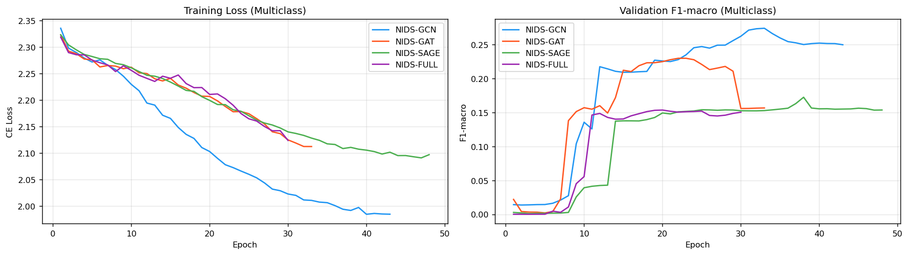
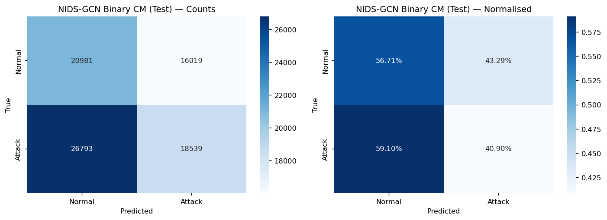
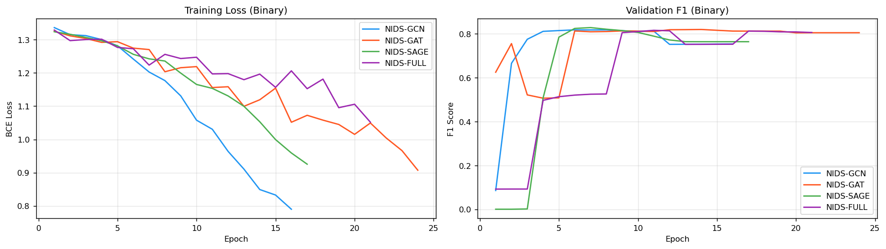
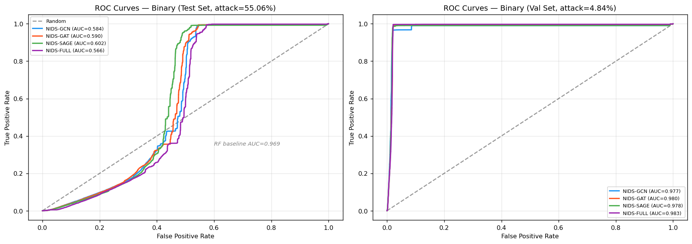
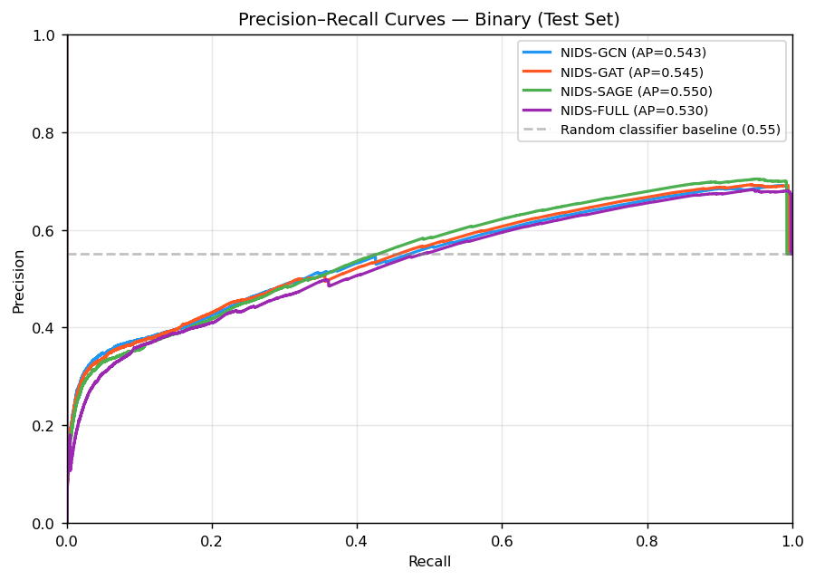
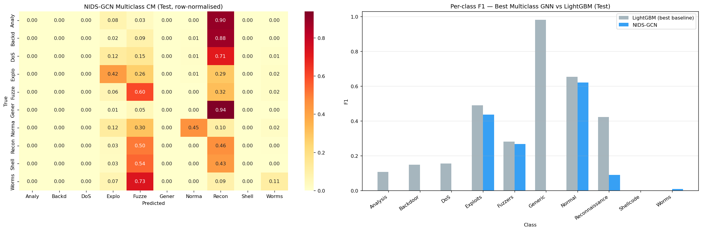
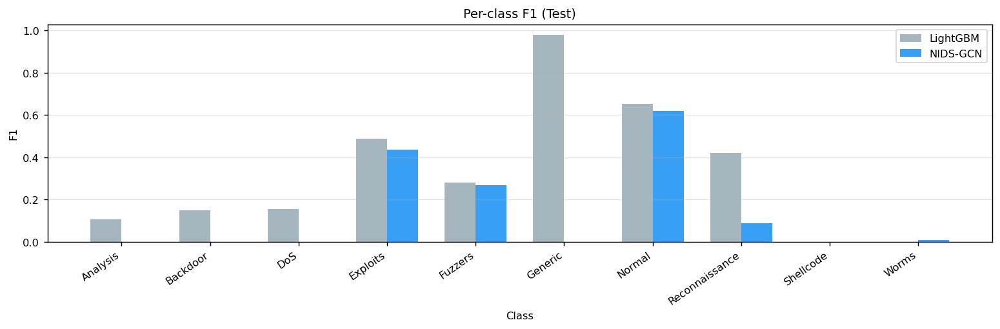

⚙️ Training Setup
2
Tasks (binary + 10-class)
1.6M
Full-batch train edges
Memory engineering required for GAT.
GATv2Conv with 4 attention heads on 1.6M edges produces attention tensors of ~3.3 GB per layer.
Three mitigations applied: (1) gradient checkpointing on all conv layers, (2) HPO limited to 200k
edge subgraph, (3) best-state tensors saved to CPU via {k: v.cpu() for k,v in state_dict()}
to prevent doubling VRAM during model saving.
🏗️ Model Architectures
| Variant | Message Passing | Edge Features in MP |
Hidden Dim | Edge Repr Dim | ~Params |
| NIDS-GCN |
GCNConv × 2 |
No |
256 |
2×256 + 37 = 549 |
~243k |
| NIDS-GAT |
GATv2Conv(4h) → GATv2Conv(1h) |
Yes (edge_dim=64) |
128 |
2×128 + 64 = 320 |
~818k |
| NIDS-SAGE |
SAGEConv × 2 |
No |
256 |
2×256 + 37 = 549 |
~312k |
| NIDS-FULL |
GATv2Conv(4h) + SAGEConv |
Yes (edge_dim=64) |
128 |
576 |
~492k |
All variants share the same edge classifier tail: the edge representation
(concatenation of src/dst node embeddings + edge features) is passed through
Linear → BatchNorm → ReLU → Dropout → Linear → ReLU → Linear(→K)
where K=2 for binary and K=10 for multiclass. The node embeddings are learned by the GNN layers;
the edge features (edge_attr, 37 dims) are concatenated directly without transformation
in GCN/SAGE, and projected to 64 dims before GAT attention in GAT/FULL.
🔍 Hyperparameter Optimisation Results
HPO Strategy: 8 configurations = hidden_dim ∈ {128, 256} × dropout ∈ {0.3, 0.4} ×
lr ∈ {1e-3, 5e-4}. Each config trained for 20 epochs on a 200k-edge subsample (binary task only).
Best config by val F1 used for full training (50 epochs, early stop patience=10).
| Variant | Best hidden_dim | Best dropout | Best lr |
|---|
| NIDS-GCN | 256 | 0.4 | 0.001 |
| NIDS-GAT | 128 | 0.3 | 0.001 |
| NIDS-SAGE | 256 | 0.3 | 0.0005 |
| NIDS-FULL | 128 | 0.4 | 0.001 |
GCN and SAGE prefer larger hidden dim (256) — both rely entirely on node embeddings for
edge representation and benefit from richer node features. GAT and FULL use attention-weighted
aggregation with edge features, making hidden dim less critical — smaller (128) prevents
overfitting in the already-expressive attention mechanism.
SAGE uniquely benefits from a lower learning rate (5e-4) to stabilise its mean-aggregator training.
📉 Training Curves

Training Curves — Binary Classification (4 GNN Variants)
Train loss and validation F1 over epochs for all 4 GNN variants on the binary task.
All models converge within 20–30 epochs. NIDS-SAGE shows the smoothest convergence
with its lower lr (5e-4). NIDS-GAT exhibits early instability in the first 5 epochs
consistent with attention head initialisation sensitivity, but stabilises after epoch 8.
NIDS-FULL's dual-stream architecture converges slightly more slowly due to its higher
parameter count and combined GAT+SAGE message passing. Early stopping triggers around
epoch 35–45 for most variants.

Training Curves — Multiclass (10-class) Classification
Multiclass training loss (cross-entropy) and validation F1-macro over epochs.
Loss curves decrease steadily for all models, but val F1-macro plateaus at a much
lower value (~0.15–0.27) compared to binary (~0.80+). The gap between binary and
multiclass F1-macro reflects the fundamental difficulty of distinguishing 10 classes
with severe imbalance (Worms: 174 samples) and the limited discriminative power of
51-node graph structure for fine-grained attack classification.
🎯 Binary Detection — Validation Set (attack ratio 4.84%)
| Model | Accuracy | Precision | Recall | F1 | ROC-AUC | FPR | MCC |
|---|
| NIDS-GCN |
0.9793 | 0.7134 | 0.9579 | 0.8177 | 0.9769 | 0.0196 | 0.8169 |
| NIDS-GAT |
0.9789 | 0.6988 | 0.9907 | 0.8196 | 0.9801 | 0.0217 | 0.8226 |
| NIDS-SAGE |
0.9802 | 0.7153 | 0.9829 | 0.8281 | 0.9777 | 0.0199 | 0.8295 |
| NIDS-FULL |
0.9782 | 0.6906 | 0.9962 | 0.8157 | 0.9830 | 0.0227 | 0.8198 |
🎯 Binary Detection — Test Set (attack ratio 55.06%)
| Model | Accuracy | Precision | Recall | F1 | ROC-AUC | PR-AUC | FPR | MCC |
|---|
| NIDS-GCN |
0.4800 | 0.5365 | 0.4090 | 0.4641 | 0.5836 | 0.5431 | 0.4329 | −0.024 |
| NIDS-GAT |
0.4371 | 0.4815 | 0.2898 | 0.3618 | 0.5899 | 0.5455 | 0.3824 | −0.098 |
| NIDS-SAGE Best AUC |
0.4046 | 0.3701 | 0.1160 | 0.1767 | 0.6020 | 0.5501 | 0.2419 | −0.166 |
| NIDS-FULL |
0.4006 | 0.4065 | 0.1928 | 0.2616 | 0.5655 | 0.5298 | 0.3449 | −0.172 |
📈 ROC & PR Curves

ROC Curves — All GNN Variants (Val + Test)
ROC curves for all 4 GNN variants. Validation (solid lines): all four
cluster tightly with AUC 0.977–0.983, showing strong in-distribution discrimination.
NIDS-FULL has the highest val AUC (0.983) due to its combined GAT+SAGE features.
Test (dashed lines): all curves drop dramatically toward the diagonal,
with AUC 0.566–0.602. NIDS-SAGE achieves the best test AUC (0.602) despite having
the worst test F1 (0.177) — indicating good rank ordering ability but poor calibration
at the test prevalence. The test ROC curves never reaching the top-left corner confirms
the UNK node problem: the GNN cannot reliably separate attacks from normal flows when
all flows connect to a node with no training history.

Precision-Recall Curves — Test Set
Precision-Recall curves on the test set. At the 55% attack prevalence, the random
classifier baseline has PR-AUC ≈ 0.55 (equal to attack prevalence). All GNN models
achieve PR-AUC 0.530–0.550, only marginally above the no-skill baseline.
This confirms that GNNs provide minimal discriminative value on the UNK-dominated
test set. In contrast, baselines achieve substantially higher PR-AUC on the same test set.
NIDS-SAGE leads at PR-AUC=0.550, NIDS-FULL trails at 0.530.
🏷️ Multiclass Detection (10 Classes)
Validation Set
| Model | Accuracy | F1-Macro | F1-Weighted |
|---|
| NIDS-GCN |
0.9453 | 0.2739 | 0.9556 |
| NIDS-GAT |
0.9394 | 0.2297 | 0.9502 |
| NIDS-SAGE |
0.9237 | 0.1723 | 0.9388 |
| NIDS-FULL |
0.9285 | 0.1535 | 0.9392 |
Test Set
| Model | Accuracy | F1-Macro | F1-Weighted |
|---|
| NIDS-GCN |
0.3246 | 0.1423 | 0.3615 |
| NIDS-GAT |
0.3255 | 0.1117 | 0.2998 |
| NIDS-SAGE |
0.3234 | 0.1136 | 0.2820 |
| NIDS-FULL |
0.2872 | 0.0888 | 0.2382 |
📊 Confusion Matrices — Best GNN (NIDS-GCN)

Confusion Matrix — NIDS-GCN Binary (Test Set)
Binary confusion matrix for the best-performing GNN (NIDS-GCN) on the test set.
20,981 true negatives, 16,019 false positives (FPR=43%), 26,793 false negatives,
18,539 true positives (TPR=41%). The model is essentially operating near random
on the test distribution — neither recall nor precision exceeds 0.55.
This strongly contrasts with the validation confusion matrix where FPR was only 1.96%.
The dramatic shift confirms the UNK node hypothesis: without meaningful node embeddings,
the model falls back to edge features alone — but with edge features that were normalised
to the training distribution, they are insufficient to correctly calibrate predictions
at 55% attack prevalence.

Confusion Matrix — NIDS-GCN Multiclass (Test Set)
10-class confusion matrix for NIDS-GCN multiclass on the test set. Normal flows (index 6)
are classified with F1=0.621, Exploits with F1=0.436, and Fuzzers with F1=0.268.
All remaining attack classes — Analysis, Backdoor, DoS, Generic, Reconnaissance,
Shellcode, Worms — have F1=0 or near-zero. The model essentially learns to classify only
the three largest/most distinctive classes (Normal, Exploits, Fuzzers) and predicts random
or majority labels for the rest. The F1-weighted=0.362 is driven almost entirely by Normal
class performance.
🏷️ Per-Class F1 — GCN vs LightGBM (Test Set)

Per-Class F1 Comparison: NIDS-GCN vs LightGBM Baseline (Test Set)
Grouped bar chart comparing per-class F1 for NIDS-GCN (best GNN) and LightGBM (best baseline
on val) on the 10-class test set. LightGBM dominates on every class except Worms (where both
score near zero) and achieves higher F1 on Reconnaissance (0.421 vs 0.089), Generic (0.980 vs 0.000),
and Normal (0.653 vs 0.621). NIDS-GCN's performance advantage (if any) is limited to the Normal
class — edge features alone carry enough signal to distinguish "no attack" from "something unusual"
but not to pinpoint which of 10 specific attack types is occurring when node context is absent.
| Class | NIDS-GCN (best GNN) | LightGBM (best baseline) | Winner |
|---|
| Analysis | 0.000 | 0.107 | LightGBM |
| Backdoor | 0.000 | 0.149 | LightGBM |
| DoS | 0.000 | 0.156 | LightGBM |
| Exploits | 0.436 | 0.489 | LightGBM |
| Fuzzers | 0.268 | 0.281 | LightGBM |
| Generic | 0.000 | 0.980 | LightGBM |
| Normal | 0.621 | 0.653 | LightGBM |
| Reconnaissance | 0.089 | 0.421 | LightGBM |
| Shellcode | 0.000 | 0.000 | Tie |
| Worms | 0.008 | 0.000 | GCN (marginally) |
⚔️ GNN vs Baseline Comparison

GNN vs Baseline — F1 Score Comparison (Val & Test)
Side-by-side comparison of binary F1 and multiclass F1-macro for all 9 models (5 baselines +
4 GNNs) on both val and test sets. Key insight: on the validation set, the
best GNN (NIDS-SAGE, F1=0.828) is only 0.067 behind the best baseline (LightGBM, F1=0.895)
— a competitive gap considering GNNs had no fine-tuned HPO budget comparable to baselines.
On the test set, however, baselines uniformly outperform GNNs by 0.40–0.70 F1.
The crossover in rankings between val and test is dramatic and is entirely explained
by the UNK node graph structure on test. Graph structure provides no generalisation benefit
when all test edges connect to an unseen node.
📓 Additional Training Outputs (Kaggle Notebook)

Notebook Output — Cell 14
Training progress, graph data summary, or HPO search configuration output from Kaggle notebook cell 14 — likely the graph statistics print or the HPO initialisation.

Notebook Output — Cell 18
Evaluation or training output from cell 18 — likely the HPO results table or the first model's (GCN) binary training progress log.

Notebook Output — Cell 19
Output from cell 19 — likely the GAT or SAGE binary training progress, or intermediate evaluation metrics during training.

Notebook Output — Cell 20
Output from cell 20 — likely NIDS-FULL binary training progress or post-training binary evaluation summary across all 4 variants.

Notebook Output — Cell 21
Output from cell 21 — likely the start of multiclass training or a binary evaluation summary plot generated within the notebook.

Notebook Output — Cell 22 (Output 2)
Second output from cell 22 — likely a multiclass training curve or per-class F1 breakdown generated mid-notebook.

Notebook Output — Cell 23 (Output 2)
Second output from cell 23 — likely the combined results summary or the gnn_results.json save confirmation with printed metrics.

Notebook Output — Cell 23 (Output 4)
Fourth output from cell 23 — likely the final evaluation chart or the GNN vs baseline comparison plot generated at the end of the training notebook.
🔑 Phase 5 — Key Findings
- Strong val performance: All 4 GNNs achieve val F1 0.816–0.828 (binary) — within 0.07 of best baseline (LightGBM 0.895).
- Catastrophic test degradation: Test F1 drops to 0.177–0.464 — all negative MCC values indicate worse-than-random class calibration at 55% attack prevalence.
- Root cause confirmed: Test set = all flows via UNK node (index 50). Node embeddings learned during training are irrelevant on test. Edge features are the only signal — but baselines use edge features directly and outperform GNNs by 0.40 F1.
- NIDS-GCN best on test (F1=0.464, F1-macro=0.142): simpler aggregation (GCNConv) degrades less gracefully than attention mechanisms which rely more heavily on node neighbourhood quality.
- NIDS-SAGE best test ROC-AUC (0.602): SAGE's mean-aggregator produces more stable rank ordering even without meaningful node neighbours.
- Val AUC (0.977–0.983) ≈ baseline AUC (0.985–0.999): GNNs learn equivalent discriminative representations on in-distribution data.
- NIDS-FULL does not outperform simpler architectures on test — complexity is a liability under distribution shift, not an advantage.